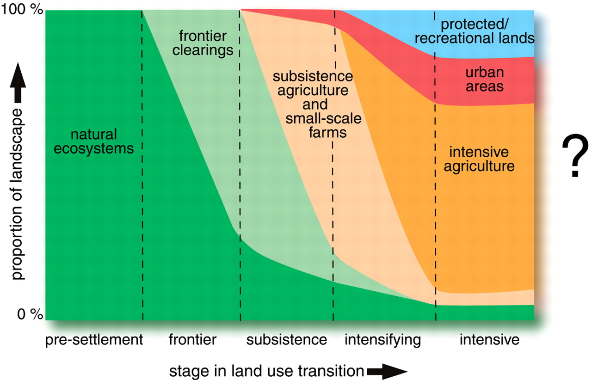
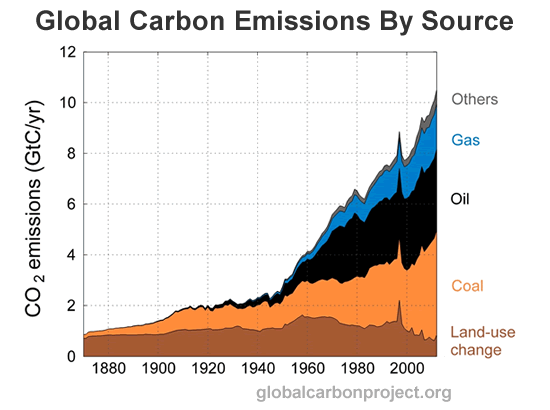

Land-use change
Gustav Engström
PB-workshop, 2016
What is land-use change? 
Fig. 1. Land-use transitions. Transitions in land-use activities that may be experienced within a given region over time. As with demographic and economic transitions, societies appear also to follow a sequence of different land-use regimes: from presettlement natural vegetation to frontier clearing, then to subsistence agriculture and small-scale farms, and finally to intensive agriculture, urban areas, and protected recreational lands (Foley etal 2005).
What is the problem?
- Changes in greenhouse gas emissions from the land (especially CO2) (effects only at global scale)
- Land-use change often concerns the conversion of forests to croplands (decreases forest ecosystems and services provided).
- Changes in energy and water balance at land surface (effects at different scales)
Land-use and climate change

Typology of land use and land-use change?
Two dominant categories
- Land-use change - conversion of one type of ecosystem to another (e.g. conversion of forest to cropland).
- Land use - management with no change in land cover (e.g. harvest of wood).
Land-use change
- Croplands - conversion of lands to croplands has been responsible for the largest emissions of carbon from land-use change.
- Pastures - expansion and contraction of pastures or grazing lands
Land-intensive production
Non land-intensive
crops
$\max p_C H_C(L_C,\Phi, W) - p_L L_C - p_W W - p_{\Phi} \Phi $
$\max p_C H_C(L_C,\Phi, W) - p_L L_C - p_W W - p_{\Phi} \Phi $
pasture
$\max p_G H_G(L_G) - p_L L_G$
$\max p_G H_G(L_G) - p_L L_G$
timber
$\max p_T H_T(L_T) - p_L L_T$
$\max p_T H_T(L_T) - p_L L_T$
bio-energy
$\max p_B H_B(L_B) - p_L L_B$
$\max p_B H_B(L_B) - p_L L_B$
market clearing land
$L = L_C + L_P + L_T + L_B$
$L = L_C + L_P + L_T + L_B$
fertilizers
$\max p_{\Phi} \Phi (N(X), P) - p_X X - p_P P $
$\max p_{\Phi} \Phi (N(X), P) - p_X X - p_P P $
fossil fuels
$\max \sum_{t=0}^{\infty} p_{X} X_t, \;\text{s.t.} \; \sum_{t=0}^{\infty} X_t \leq X_0 $
$\max \sum_{t=0}^{\infty} p_{X} X_t, \;\text{s.t.} \; \sum_{t=0}^{\infty} X_t \leq X_0 $
phosphorous
$\max \sum_{t=0}^{\infty} p_{P} P_t, \; \text{s.t.} \; \sum_{t=0}^{\infty} P_t \leq P_0 $
$\max \sum_{t=0}^{\infty} p_{P} P_t, \; \text{s.t.} \; \sum_{t=0}^{\infty} P_t \leq P_0 $
water
$\max \sum_{t=0}^{\infty} p_{W} W_t, \; \text{s.t.} \; A_{t+1} = H_A( A_t) - W_t $
$\max \sum_{t=0}^{\infty} p_{W} W_t, \; \text{s.t.} \; A_{t+1} = H_A( A_t) - W_t $
fisheries
$\max \sum_{t=0}^{\infty} p_{F} F_t, \; \text{s.t.} \; S_{t+1} = H_S(S_t) - F_t $
$\max \sum_{t=0}^{\infty} p_{F} F_t, \; \text{s.t.} \; S_{t+1} = H_S(S_t) - F_t $
energy
$\max p_E H_E(X, B, R) - p_x X - p_B B -p_R R $
$\max p_E H_E(X, B, R) - p_x X - p_B B -p_R R $
Definitions
Bioenergy (B)
Crops (C)
Fishery (harvest) (F)
Fishery (stock) (S)
Fossil-fuels (X)
Nitrogen (N)
Phosporous (P)
Timber (T)
Renewables (R)
Fertilizers ($\Phi$)
Water (flow) ($W$)
Water (reserve) ($A$)
Production func. ($H_i, \Phi$)
Bioenergy (B)
Crops (C)
Fishery (harvest) (F)
Fishery (stock) (S)
Fossil-fuels (X)
Nitrogen (N)
Phosporous (P)
Timber (T)
Renewables (R)
Fertilizers ($\Phi$)
Water (flow) ($W$)
Water (reserve) ($A$)
Production func. ($H_i, \Phi$)